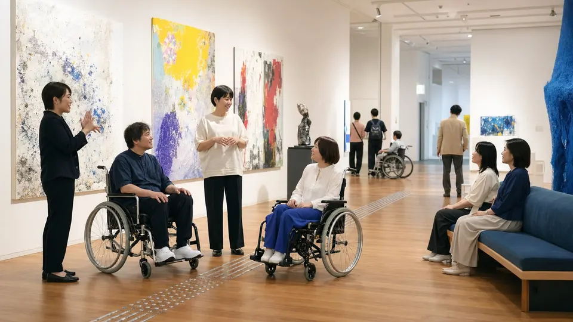
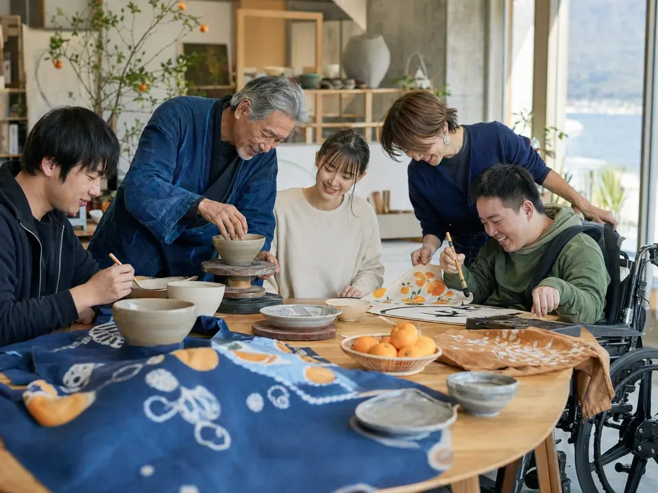
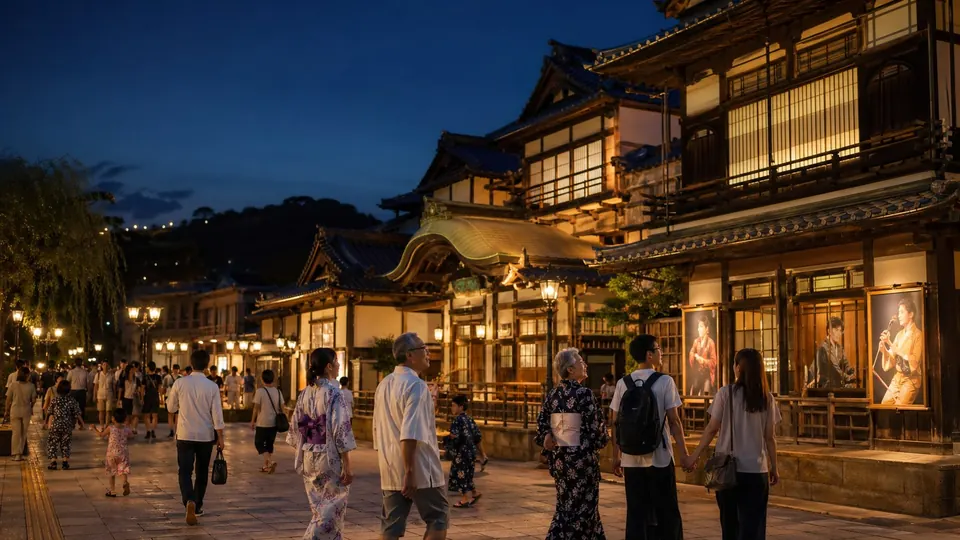

本欄には、未確定の掲載案・表示例を含みます。大会の正式名称・会期は大会概要でご確認ください。
大会概要を確認
令和10年度 愛媛県開催内定 / 名称・会期は未定
国民文化祭・全国障害者芸術・文化祭
愛媛の文化を、全国へ。
そして、次の世代へ。
瀬戸内海、宇和海、石鎚山、四国遍路、お接待の心。愛媛に息づく多様な文化を県内各地から発信する、国民文化祭・全国障害者芸術・文化祭 愛媛大会（仮）が令和10年度に開催されます。
公開準備の目安
---
令和10年度開始までの日数
重要なお知らせ
現在、緊急のお知らせはありません。会期中は変更・中止・交通規制等をここに掲出します。
重要情報を見る
愛媛で開催する意義
全国規模の文化の祭典が、愛媛へ。
このサイトは、世界観を伝えるブランドサイト、イベントを探せる実用ポータル、企業・団体・県民の参画を促す参加型プラットフォームを一体化する想定です。行政公式サイトとしての正確性と、文化祭らしい余白・写真表現を両立します。
愛媛らしさ
瀬戸内海、道後、しまなみ、石鎚、南予の文化を大きな写真で伝える。
瀬戸内海を望む文化祭会場で、多世代の人々が芸能と工芸を楽しむ様子
 しまなみ海道を思わせる橋と海、サイクリングを楽しむ人々
しまなみ海道を思わせる橋と海、サイクリングを楽しむ人々

バリアフリーに配慮したギャラリーで作品を鑑賞する人々
愛媛で開く意味
愛媛大会（仮）とは
大会の意義、基本方針、国民文化祭と全国障害者芸術・文化祭の概要を伝えます。
ページを見る
行きたい催しを探す
イベント情報
日付、市町、ジャンル、バリアフリー対応などでイベントを探せるポータルです。
ページを見る
参加する
募集情報
出演・出品、ボランティア、応援事業、入札など、参加の入口をまとめます。
ページを見る
企業と文化をつなぐ
協賛・応援企業
協賛、寄付、物品・サービス協力、関心表明の入口を設けます。
ページを見る
文化と旅を結ぶ
観光・周遊案内（仮）
県外来訪者や県内周遊者に向け、文化祭と愛媛観光を結びます。
ページを見る
誰もが参加できる
アクセシビリティ・バリアフリー情報
情報保障、会場バリアフリー、イベント別対応、相談窓口を整理します。
ページを見る

参加する文化祭
出演、出品、ボランティア、応援事業へ。
募集情報は、対象・期間・申込方法・要項をHTMLでも分かりやすく掲載し、PDFだけに依存しない設計にします。
募集情報を見る

安心して来場する
イベント、交通、バリアフリーを一つの流れで。
イベントごとに予約要否、料金、会場、交通、手話・字幕・車椅子席などの対応情報を確認できる構成です。
対応一覧を見る
公式ホームページ案を公開しました
仕様書に基づき、未確定ページを含む全階層の仮ページを作成しています。
詳細を見る
協賛関心表明フォーム（仮）を設置
正式募集前の相談導線として、企業・団体向けの入口を用意しました。
詳細を見る
アクセシビリティ情報の仮ページを公開
情報保障、会場情報、イベント別対応の整理イメージを掲載しました。
詳細を見る

観光・周遊
文化祭の体験を、愛媛の旅へ広げる。
道後温泉、しまなみ海道、内子・大洲、宇和島、石鎚山、砥部焼、柑橘、鯛めしなどをイベント情報と結びます。
旅の案内を見る
広報・公式発信
PR動画、SNS、広報素材も、正式決定後に整理して公開。
PR動画字幕・手話あり版も想定
広報動画は通常版だけでなく、情報保障版や短尺版に分けて掲載します。
PR動画を見る
SNS公式発信を集約
公式SNS決定後、更新情報、イベント紹介、交通・重要情報への導線として活用します。
SNSリンクを見る
関連リンク公式観光・県情報へ接続
愛媛県庁、国民文化祭推進室、いよ観ネット等の公式情報へ誘導します。
いよ観ネットを開く
公式情報・参照元
記述内容の確認に使う公式情報
本ページ案の記述は、愛媛県庁の開催準備情報と、愛媛県公式観光サイト等で確認できる観光・文化資源をもとに整理しています。